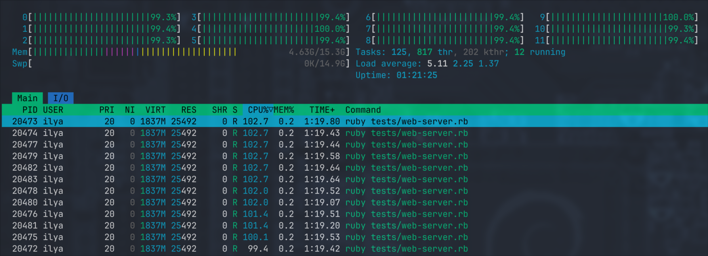
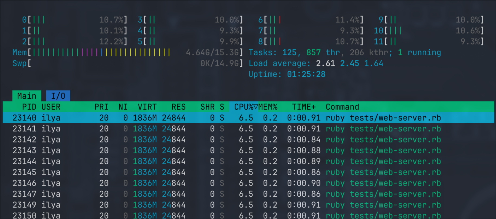

Writing a Web Server
This is our destination point. We'll try to make a server that:
- spawns a Ractor per core
- starts a TCP server loop in the main thread
- uses a shared queue to send incoming requests from the main thread to workers
- parses a request in the worker, does some trivial routing and calls a request handler
- uses a pool of "dummy" DB connections
- writes a dynamic response back
First, we need a queue and a connection pool:
QUEUE = CAtomics::MpmcQueue.new(16)
class DummyConnection
def initialize(conn_id)
@conn_id = conn_id
end
def read_data(id)
{
loaded_using_conn_id: @conn_id,
id: id,
name: "Record #{id}"
}
end
end
connections = 1.upto(16).map { |conn_id| DummyConnection.new(conn_id) }
DB_CONNECTION_POOL = CAtomics::FixedSizeObjectPool.new(16, 1_000) { connections.shift }
- Queue's capacity is 16
- Connection pool also consists of 16 dummy objects that simulate what a connection would do under the hood. You give it an input (
idin our case) and it returns dynamic data based on it. Plus, it embeds an ID of the connection. - Connection pool has a 1s timeout, so if the pool is empty for more than 1 second it'll throw a timeout error.
Then we can start our workers:
def log(s)
$stderr.puts "[#{Ractor.current.name}] #{s}"
end
workers = 1.upto(CPU_COUNT).map do |i|
puts "Starting worker-#{i}..."
Ractor.new(name: "worker-#{i}") do
while (conn = QUEUE.pop) do
process_request(conn)
end
log "exiting..."
Ractor.yield :done
rescue Exception => e
log e.class.name + " " + e.message + " " + e.backtrace.join("\n ")
Ractor.yield :crashed
end
end
We'll use nil as a special terminating object that stops a Ractor from polling the queue.
Then we can add a signal handler for graceful shutdown:
trap("SIGINT") do
puts "Exiting..."
CPU_COUNT.times { QUEUE.push(nil) }
p workers.map(&:take)
exit(0)
end
This handler pushes nil for each running Ractor which lets them process what's already in the queue but after that they'll stop.
And finally we can start our TCP server:
server = Socket.tcp_server_loop(8080) do |conn, addr|
# Got incoming connection, forwarding it to a worker...
QUEUE.push(conn)
end
The only missing part is the process_request(conn) method:
def process_request(conn)
body = read_body(conn)
http_method, path, protocol, headers, body = parse_body(body)
log "#{http_method} #{path}"
case [http_method, path]
in ["GET", "/slow"]
heavy_computation(100)
reply(conn, 200, {}, "the endpoint is slow (100ms)")
in ["GET", "/fast"]
reply(conn, 200, {}, "yes, it's fast")
in ["GET", /^\/dynamic\/(?<id>\d+)$/]
id = Regexp.last_match[:id].to_i
data = DB_CONNECTION_POOL.with { |db| db.read_data(id) }
reply(conn, 200, {}, data.to_json)
else
reply(conn, 404, {}, "Unknown path #{path}")
end
rescue Exception => e
log e.class.name + " " + e.message + " " + e.backtrace.join("\n ")
reply(conn, 500, {}, "Internal server error")
ensure
conn.close
end
It doesn't really matter how we read and parse request body, but if you are curious feel free to take a look at the full example. In short, I'm reading from the socket with
read_nonblockuntil there's nothing to read and then there's a dummy parser that can only handle HTTP 1 text-based format.We could re-use an existing library like
webrickbut I'm not sure if they can be called from non-main Ractors.
This server has 3 endpoints:
/slow- takes 100ms to execute, during all this time it does CPU-only work/fast- replies immediately with a static payload/dynamic/:id- "loads" the data from our fake database and returns dynamic response
It's absolutely OK it if looks ugly, I made it simple to take as few space as possible. Things like database connection that we've got from the pool can be easily placed in Ractor.current[:database] to make it globally accessible within the scope of request (so User.find(<id>) from ActiveRecord can still exist in this world).
When we run our script we get the following output:
$ ruby tests/web-server.rb
CPU count: 12
Starting worker-1...
Starting worker-2...
Starting worker-3...
Starting worker-4...
Starting worker-5...
Starting worker-6...
Starting worker-7...
Starting worker-8...
Starting worker-9...
Starting worker-10...
Starting worker-11...
Starting worker-12...
Starting server...
And each endpoint also works fine.
fast
$ curl http://localhost:8080/fast
yes, it's fast
# => [worker-6] GET /fast
slow
$ curl http://localhost:8080/slow
the endpoint is slow (100ms)
# => [worker-1] GET /slow
dynamic
$ curl http://localhost:8080/dynamic/42
{"loaded_using_conn_id":1,"id":42,"name":"Record 42"}
$ curl http://localhost:8080/dynamic/17
{"loaded_using_conn_id":2,"id":17,"name":"Record 17"}
# => [worker-4] GET /dynamic/42
# => [worker-7] GET /dynamic/17
a bit of stress testing
Let's see if it survives if we send more requests (each takes 100ms of pure computations):
$ ab -c12 -n1000 http://localhost:8080/slow
// ...
Completed 900 requests
Completed 1000 requests
Concurrency Level: 12
Time taken for tests: 8.536 seconds
Complete requests: 1000
Failed requests: 0
Total transferred: 67000 bytes
HTML transferred: 28000 bytes
Requests per second: 117.16 [#/sec] (mean)
Time per request: 102.427 [ms] (mean)
Time per request: 8.536 [ms] (mean, across all concurrent requests)
Transfer rate: 7.67 [Kbytes/sec] received
and meawhile we get a nice picture in Htop:

Once ab is done the process goes back to idle:
